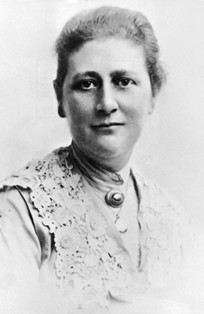

Há mais de cem anos, uma jovem inglesa chamada Beatrix Potter escreveu uma história numa carta ao filho de uma amiga, um menino chamado Noel. Todos gostaram tanto da história e dos desenhos de Beatrix que ela acabou por escrever um livro que se tornou conhecido em todo o mundo. A esse seguiram-se mais de vinte, todos com histórias de animais, e tornaram-se tão admirados que desde então até agora nunca estiveram esgotados.
Beatrix Potter nasceu no nº 2 de Bolton Gardens, em Kensington Square, Londres, no dia 28 de julho de 1866. Sua família, da alta burguesia, era ligada ao comércio de algodão. Ela estudou em casa e recebeu da governanta uma educação vitoriana. Teve um irmão, Bertram, seis anos mais novo do que ela.
Quando Bertram foi estudar fora, Beatrix, uma menina tímida, reservada e solitária, tinha como companhia os seus animais de estimação. Ela gostava de observar o comportamento deles e começou a desenhá-los quando tinha nove anos. Nas férias de verão, viajava com a família para o campo. Foi primeiro para a Escócia e, mais tarde, para Lake District, na Grã-Bretanha. Aprendeu a apreciar a natureza de perto. Mais tarde estudou arte e história natural.
Na adolescência, Beatrix Potter começou a escrever um diário secreto, em código. Quinze anos após a sua morte, o código pôde ser decifrado. Foi publicado em inglês, sob o título de "Beatrix Potter: A Journal".

Beatrix Potter, 1894